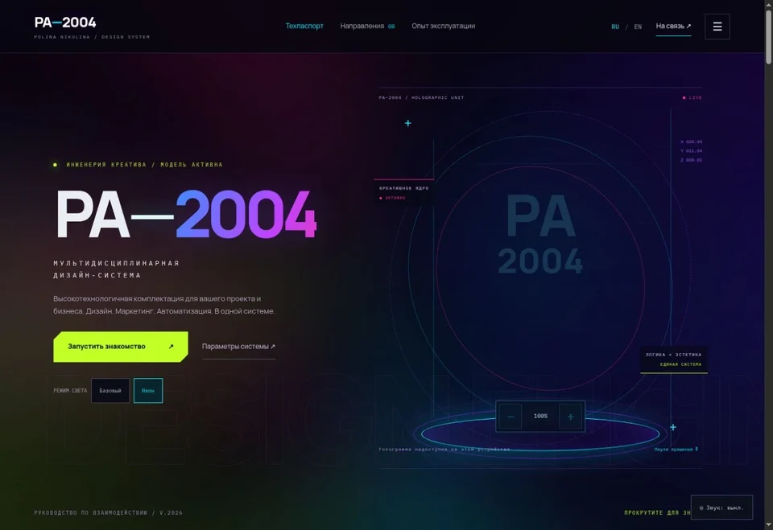
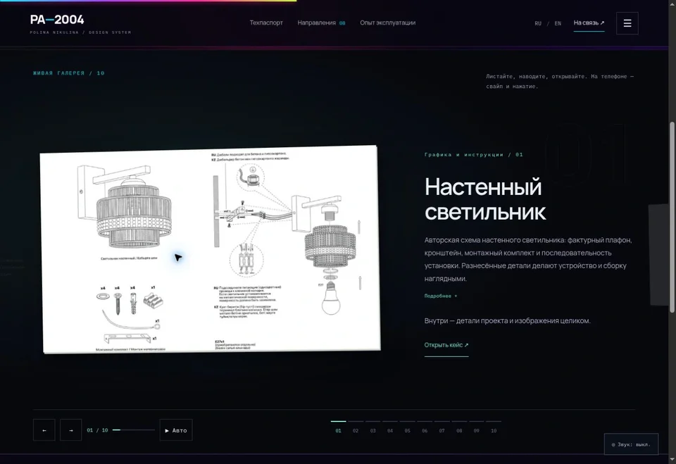
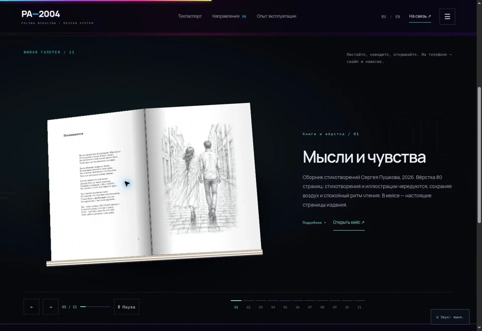

The task
Unite design, content and digital projects in one portfolio, with a quick overview of skills and detailed case exploration.
PA–2004 is Polina Nikulina’s completed multi-page portfolio website, from the technical passport concept to a published interactive experience.

Unite design, content and digital projects in one portfolio, with a quick overview of skills and detailed case exploration.
A personal brand presented as a technological product: a technical passport, plug-in modules and operating history. Dark surfaces, coloured light, technical typography and line graphics form a shared language.
Responsive Russian and English pages, eight portfolio modules, physical print mockups, carousels, video and an optional interactive 3D model.
The PA–2004 concept, visual direction, structure, work selection and presentation. Interface development and interactive flows using AI tools.
A published portfolio with verified case covers and titles. Responsive images, local fonts, deferred media and precomputed print textures reduce loading work. A GitHub Pages publishing package is prepared.

